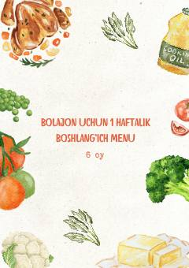

BUOlti oylik chaqaloqlar uchun bir haftalik boshlang'ich taomnoma va maslahatlar.
Ushbu qo'llanmada chaqaloqlar uchun olti oydan boshlab bir haftalik boshlang'ich taomnomani tuzish qoidalari va foydali maslahatlar keltirilgan. Mahsulotlarni tayyorlash usullari, bolani to'g'ri ovqatlantirish tartiblari oddiy va tushunarli tarzda bayon etilgan.